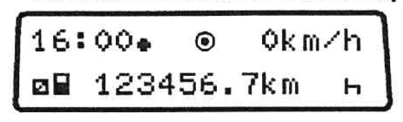
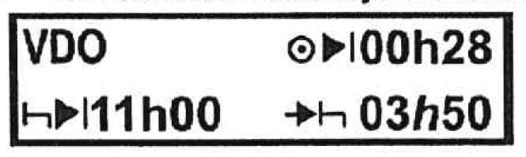
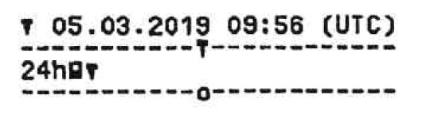
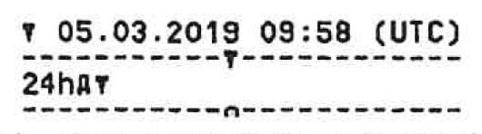
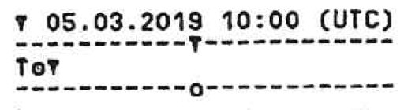
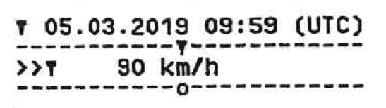
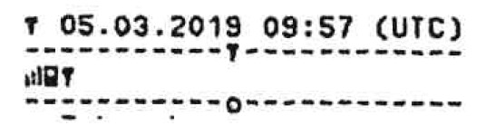

1. Z čoho sa skladá vonkajšia prehliadka vozidla pred jazdou?
c) celkový stav karosérie, úplnosť výstroja, stav pneumatík, čistota EČV, svetiel, spätných zrkadiel a okien
2. Aké úkony má vykonať vodič pred začatím jazdy aby jazda z vozidlom, ktoré preberá na prepravu bola bezpečná?
b) nastavenie sedadla, spätných zrkadiel (resp. kontrola funkčnosti kamerového systému) a pripútane sa bezpečnostným pásom
3. Keď vodič vozidla dokončí radenie prevodových stupňov čo musí urobiť?
d) pravú ruku vrátime na volant a nenechávame ju na riadiacej páke lebo dochádza k zbytočnému zaťaženiu mechanizmu radenia a jeho zbytočnému opotrebovaniu
4. Aké sú hlavné zásady vedenia vozidla na rovnej ceste?
b) viest' vozidlo v pravej polovici vozovky a pokiaľ tomu nebránia osobitné okolnosti, pri pravom okraji vozovky; pozorne sledovať premávku pred vozidlom aj za vozidlom aj vedľa vozidla; podľa možnosti sleduje premávku ďalej pred vozidlo a snažíme sa správne odhadovať vývoj dopravnej situácie a podľa toho včas a správne reagovať
5. Aké sú hlavné zásady vedenia vozidla v zákrute?
c) pred zákrutou včas znížime rýchlosť jazdy, prípadne preradíme na nižší prevodový systém; pri vchádzaní do zákruty a počas jej prechádzania už nebrzdime; volantom je potrebné natáčať plynulo aby dráha vozidla zostávala v pravej polovici vozovky a v neprehľadných zákrutách byť pripravený aj na možnú prekážku napr. odstavené vozidlo, cyklistu, chodca a pod.
6. Aké sú hlavné zásady vedenia autobusu v meste alebo obci?
b) podľa možnosti sa prispôsobíme najmä vozidlám idúcim pred nami v našom jazdnom pruhu a zbytočne neprechádzame z pruhu do pruhu; využívame jazdné pruhy pre autobusy; pred priechodom pre chodcov alebo cyklistov dodržiavame dostatočný odstup od vozidiel aby sme mohli pri vstúpení chodcov a cyklistov na priechod pred ním plynule a bezpečne zastaviť vozidlo
7. Aké má hlavné nároky na vedenie vozidla v meste aby bolo bezpečné?
c) v meste musíme sledovať svetelné signály, pokyny oprávnených osôb, dopravné značenie, pohyb chodcov, cyklistov, kolobežkárov, vozidiel, smerové tabule atď.; preto vedenie vozidla v meste si vyžaduje veľké sústredenie, predvídavosť, rozhodnosť a určitú zručnosť vodiča
8. Ktoré informačné systémy sa nepoužívajú na optimalizáciu trasy prepravy v cestnej doprave?
c) palubná jednotka na platbu mýtneho
9. Ktorú alternatívu musí zvoliť vodič, pri trasovaní prepravy v nepravidelnej autobusovej doprave pomocou elektronického navigačného systému, aby trasa viedla prevažne po tranzitných cestách vyššej triedy najmä diaľniciach a rýchlostných cestách?
b) najrýchlejšia cesta
10. Je možné nastavovať elektronický navigačný systém vodičom počas jazdy?
a) vodič počas jazdy nemôže nastavovať elektronický navigačný systém
11. Umožňuje elektronický navigačný systém aj hlasovú navigáciu?
d) áno, niektoré umožňujú aj hlasovú navigáciu
12. K pretočeniu motora (prekročeniu maximálnych otáčok motora) môže dôjsť v dôsledku preradenia na
b) nižší prevodový stupeň
13. Pri prekročení maximálnych otáčok motora
a) hrozí poškodenie motora v dôsledku zrážky dna piesta s ventilom
14. Optimálna prevádzková teplota vodou chladeného motora je
a) 80-90 °C
15. Nesprávna geometria riadiacej nápravy
a) má vplyv na ovládateľnosť vozidla a opotrebenie pneumatík
16. Ako je dovolené vlečenie autobusu po jeho poruche resp. nespôsobilosti pokračovať v ďalšej jazde?
b) autobus sa smie vliecť len bez prepravovaných osôb
17. Kapacita akumulátora s klesajúcou teplotou okolia
c) klesá
18. Nepravidelne opotrebený behúň pneumatiky upozorňuje na
a) chybu v zavesení kolies a v geometrii náprav
19. Zanesený filter vzduchu
a) zhoršuje plnenie valcov a zvyšuje spotrebu paliva
20. Pri prehriati vodou chladeného motora v dôsledku nedostatočného množstva chladiacej kvapaliny
a) opatrne necháme uniknúť pretlak v chladiacom systéme a vodu dolievame až po vychladnutí motora
21. Úlohou oleja v motore je
b) mazať, tesniť, chladiť, odplavovať nečistoty, chrániť proti korózii, tlmiť hluk
22. Pri výmene oleja v motore
d) musíme použiť olej v súlade s odporúčaniami výrobcu
23. Pri dopĺňaní morového oleja môžeme použiť
d) len olej rovnakého druhu a kvality aký je v motore použitý
24. Na motorovom vozidle sa používajú
d) prevodové a motorové oleje, prípadne hydraulické
25. Pred zimnou prevádzkou
a) skontrolujeme či je vozidlo pripravené na zimnú prevádzku (množstvo, stav a kvalitu prevádzkových kvapalín, výstroj a výzbroj vozidla)
26. Pri výmene kolesa
a) používame náhradné koleso predpísané výrobcom
27. Pri výmene kolesa
c) musíme zaistiť vozidlo proti samovoľnému pohybu zabrzdením a zakladacími klinmi; matice kolies povolíme; odstránime ich až keď je koleso vozidla zodvihnuté tak, že stratilo kontakt s podkladom
28. Pri výmene kolies
b) použijeme zdvihák nosnosti rovnajúcej sa najmenej zaťaženiu kolesa ktoré chceme vymeniť
29. Ak pri výmene kolies treba dohustiť pneumatiku
d) na tlak predpísaný pre nápravu na ktorú sme koleso namontovali
30. Snehové reťaze zlepšia adhéziu kolesa
d) len na ceste pokrytej dostatočnou vrstvou snehu
31. Po výmene kolesa matice kolies
b) matice kolies dotiahneme kľúčom a po spustení nápravy ich dotiahneme podľa pokynov výrobcu a použijeme aj momentový kľúč; ich dotiahnutie po prejdení vzdialenosti cca 50 km skontrolujeme
32. Pri výmene kolesa na ceste
a) si oblečieme reflexnú vestu a umiestnime za vozidlom výstražný trojuholník; pokiaľ vo vozidle prepravujeme iné osoby zabezpečíme, aby sa nepohybovali po ceste
33. Hĺbka drážky dezénu pneumatiky
c) je rozhodujúca pre odvod vody z kontaktnej plochy s vozovkou
34. Pokiaľ poškodenie pneumatiky odhaľuje jej kostru, pneumatika
d) sa nesmie používať
35. Podhustená pneumatika
d) znižuje životnosť pneumatiky v ubehnutých kilometroch a zhoršuje aj prenos síl medzi pneumatikou a podkladom
36. Rozdielny polomer pneumatík na dvojmontáži
d) pneumatika s väčším polomerom prenáša väčšie zaťaženie
37. Pneumatiky sú zhodné
d) ak majú rovnaký rozmer, konštrukciu, druh dezénu a značku
38. Pneumatiky rovnakého rozmeru, konštrukcie (diagonálna - radiálna) od rôznych výrobcov
b) majú rôzne vlastnosti
39. Pneumatiky rôzneho druhu a konštrukcie na tej istej náprave
b) ovplyvňujú jazdné vlastností vozidla
40. Ak sme opravovali defekt na pneumatike namontovanej na delenom ráfiku
d) musíme pri jej hustení mechanicky zaistiť, aby uvoľnený záverný kruh nemohol spôsobiť úraz
41. Vozidlo vybavené systémom bŕzd ABS
a) má zaručenú riaditeľnosť smeru aj pri intenzívnom brzdení
42. Odľahčovacia brzda pri jazde za zhoršených adhéznych podmienok
a) môže spôsobiť šmyk vozidla, prípadne zalomenie súpravy
43. Dráha na zastavenie vozidla
b) sa mení s dĺžkou reakcie vodiča a rýchlosťou vozidla
44. Elektronický stabilizačný systém (ESP)
c) napomáha vodičovi udržať vozidlo v želanom smere jazdy v rámci fyzikálnych zákonov
45. Vzduchojemy je potrebné odvodňovať, aby kondenzačná voda
c) nespôsobila nefunkčnosť brzdového systému, najmä v zime v dôsledku zamrznutia
46. Pokles tlaku vzduchu vo vzduchojemoch pri vzduchových brzdách
d) spôsobí zhoršenú účinnosť brzdenia
47. Ako je definovaný autobus podľa zákona o cestnej premávke?
b) autobus je motorové vozidlo na prepravu osôb, ktoré má okrem miesta pre vodiča viac ako osem miest na sedenie
48. Ak porovnáme brzdnú dráhu vozidiel, tak
d) osobné vozidlo brzdí účinnejšie
49. Pri hľadaní poruchy na vozidle
b) postupujeme na základe znalosti konštrukcie vozidla od jednoduchších k zložitejších častiam
50. Ak pri zošliapnutí prevádzkovej brzdy počuť unikať vzduch
b) je to signál, že brzdový systém je netesný
51. Veľká vôľa brzdových kľúčov
c) pri brzdení sa zväčšuje spotreba tlakového vzduchu a predlžuje sa čas nábeh brzdného účinku
52. Ak pri brzdení blokuje jedno koleso
b) je to dôvod na dočasné vyradenie vozidla z prevádzky
53. Ak štartér nedokáže pretočiť motor príčinou je
d) vybitý akumulátor, zlý kontakt na svorkách akumulátora, chyba v ukostrení akumulátora alebo štartéra, zlý štartér, alebo kombinácia týchto závad
54. Ak nesvieti žiarovka
c) skrat vo vedení, vypálená poistka, zlý kontakt na kostru vozidla, porucha vo vedení, zlá žiarovka
55. Vôľu riadenia zisťujeme
a) na volante
56. Akumulátor neudrží kapacitu a ihneď po pripojení na nabíjačku prudko vrie
d) akumulátor je potrebné vymeniť
57. Príčinou rozsvietenia kontrolky dobíjania
b) je uvoľnený alebo poškodený klinový remeň, prípadne je poškodený alternátor
58. Ak stierač čelného skla zanecháva nezotreté plochy
a) okamžite vymením stierač
59. Emisné kontroly motorových vozidiel
a) sú povinné
60. Intervaly údržby vozidla stanovené výrobcom
b) sú stanovené s ohľadom na technickú a prevádzkovú životnosť jednotlivých častí a náplní a sú potrebné pre dodržanie životnosti vozidla a bezpečnosti jeho prevádzky
61. Pravidelná kontrola tlaku hustenia pneumatík
c) ovplyvňuje bezpečnosť cestnej premávky, pretože správne nahustené pneumatiky lepšie prenášajú sily na vozovku
62. Vytekajúci olej z tlmiča
b) má za následok zmenu jazdných vlastností vozidla ale dôvodom na dočasné vyradenie vozidla z cestnej premávky
63. Pri prekonávaní stúpaní by mal vodič
d) udržiavať motor v stabilnej oblasti otáčok
64. Pri jazde ustálenou rýchlosťou, aby dosiahol najnižšiu spotrebu paliva by mal vodič
c) zaradiť najvyšší možný prevodový stupeň tak, aby motor pracoval pravidelne a bez známok preťaženia
65. Spotreba vozidla sa zvyšuje
d) ak vozidlo prekonáva stúpanie, zvyšuje rýchlosť jazdy, od celkovej hmotnosti vozidla, má podhustené pneumatiky
66. Najšetrnejší k životnému prostrediu je motor spĺňajúci emisné limity
d) EURO 6
67. Defenzívny spôsob jazdy
a) zaisťuje minimálnu spotrebu paliva a prispieva k bezpečnosti cestnej premávky
68. Ak začne na vozidlo pôsobiť bočná sila (bočný vietor), neutrálne vozidlo
a) nezmení svoj smer pohybu, posunie sa len v smere pôsobenia bočnej sily
69. Ak má vozidlo s neutrálnou charakteristikou podhustené pneumatiky na prednej náprave, bude sa správať ako vozidlo
a) nedotáčavé
70. Stopový a obrysový polomer zatáčania vozidla
a) sú rôzne polomery, pričom vonkajší obrysový polomer je vždy väčší ako stopový polomer
71. Ak iný účastník cestnej premávky svojim správaním vyvolá nebezpečnú situáciu na ceste
a) ostatní účastníci cestnej premávky musia svojim správaním odvrátiť hroziace nebezpečenstvo, ak je to v ich silách
72. Dynamická agresívna jazda na hranici technických možností je prejavom
b) toho, že vodič je nebezpečný sebe aj ostatným účastníkom dopravy, pretože mu neostáva rezerva na zvládnutie kritických situácii
73. Vodiči smú jazdiť len takou rýchlosťou
a) aby mohli na ich správanie reagovať aj ostatní účastníci cestnej premávky
74. Pri náhlej zmene smeru a rýchlosti jazdy a pri intenzívnom brzdení v autobusovej doprave
b) niektorí stojaci cestujúci spadnú aj napriek tomu, že sa držia, môžu spadnúť aj cestujúci na predných sedadlách, ktorí nie sú pripútaní
75. Deti nachádzajúce sa pri okraji cesty
b) znamenajú, že vodič musí zvýšiť opatrnosť, pretože dieťa nie vždy vie správne vyhodnotiť situáciu
76. Ak je na vozovke vyznačený vyhradený jazdný pruh, ostatní vodiči vozidiel, pre ktorých nie je vyhradený jazdný pruh určený,
a) smú naň vojsť len pri obchádzaní, predchádzaní, odbočovaní, otáčaní, vchádzaní na cestu, alebo ak to dovoľuje dopravná značka alebo ak to vyžadujú mimoriadne okolnosti
77. Ktoré vozidlá v Slovenskej republike môžu jazdiť vo vyznačenom jazdnom pruhu pre autobusy alebo trolejbusy?
b) vozidlo taxislužby, ktoré je riadne označené; pritom nesie obmedzovať plynulosť jazdy autobusov alebo trolejbusov
78. Ak vodič autobusu alebo trolejbusu vychádza z vyhradeného jazdného pruhu do priľahlého jazdného pruhu
b) vodič jazdiaci v tomto pruhu je povinný mu dať prednosť v jazde; vodič autobusu alebo trolejbusu je pritom povinný dávať znamenie o zmene smeru jazdy a nesmie ohroziť vodičov ostatných vozidiel
79. Ak vozidlo spomaľuje, pôsobia na prepravované osoby zotrvačné sily, ktoré
a) narastajú s veľkosťou zmeny spomalenia (brzdenia)
80. Schopnosť pneumatík prenášať brzdné sily
a) sa s rýchlosťou mení - vyššia rýchlosť horšia schopnosť prenášať sily
81. Ak pri brzdení pôsobia na vozidlo súčasne aj bočné sily
c) schopnosť pneumatík prenášať bočné sily sa znižuje a pri zablokovaní kolesa dôjde k úplnej strate schopnosti prenášať bočné sily
82. Vodič vozidla, ktoré nie vybavené systémom ABS
a) by mal počítať s tým, že pri intenzívnom brzdení môže stratiť možnosť ovládať smer pohybu vozidla
83. Použitie zimných pneumatík na suchom povrchu pri teplote pod 7 °C
a) skráti brzdnú dráhu
84. Vodič je povinný prispôsobiť rýchlosť jazdy
b) svojim schopnostiam, vlastnostiam vozidla a obsadeniu autobusu cestujúcimi, poveternostným podmienkam, stavu a povahe vozovky a iným okolnostiam, ktoré možno predvídať
85. Vodič vozidla, ktoré je povinne vybavené prenosným výstražným trojuholníkom
a) je povinný tento trojuholník použiť počas núdzového státia, najmä pri prerušení jazdy pre chybu na vozidle alebo v dôsledku dopravnej nehody, ak také vozidlo tvorí prekážku cestnej premávky
86. Vodič nesmie zastaviť na vyhradenom parkovisku
a) ak nejde o vozidlo, pre ktoré je parkovisko vyhradené
87. Vodič, ktorý sa chce vzdialiť od vozidla tak, že nebude môcť okamžite zasiahnuť
a) je povinný urobiť také opatrenia, aby vozidlo nemohlo ohroziť bezpečnosť a plynulosť cestnej premávky a aby ho nemohla neoprávnene použiť iná osoba
88. Ako sa má správať vodič pred železničným priecestím?
a) vodič je povinný počínať si mimoriadne opatrne, najmä sa presvedčiť, či môže bezpečne prejsť cez železničné priecestie
89. Aké povinnosti má vodič vo vzťahu k počtu prepravovaných osôb?
a) aby sa prekročil povolený počet prepravovaných osôb, a podľa svojich možností nesmie pripustiť ani porušenie povinností ustanovených týmto osobám
90. Prepravovať osoby v motorovom vozidle alebo jeho prípojnom vozidle, ktoré je určené na prepravu osôb
a) je dovolené len na miestach na to vyhradených a len do prípustnej užitočnej hmotnosti vozidla, pritom počet prepravovaných osôb nesmie byť vyšší, ako je počet miest uvedených v osvedčení o evidencii alebo v technickom osvedčení vozidla
91. Vodič autobusu nesmie za jazdy hovoriť s cestujúcimi
a) pretože to predlžuje jeho reakčnú dobu a zároveň dráhu na zastavenie vozidla
92. Vodič autobusu v Slovenskej republike smie jazdiť akou rýchlosťou mimo obce?
a) smie jazdiť rýchlosťou najviac 90 km/h, na diaľnici a na rýchlostnej ceste najviac 100 km/h
93. Defenzívny spôsob jazdy
b) spôsobuje, že vodič menej často brzdí, zrýchľuje a preraďuje. To znižuje spotrebu paliva, opotrebenie bŕzd, pneumatík a celého vozidla
94. Náklady na spotrebované pohonné hmoty prepočítané na jeden ubehnutý kilometer
a) patria k najvýznamnejším variabilným (premenlivým) nákladom na ubehnutý kilometer
95. Ovplyvňuje rýchlosť jazdy spotrebu paliva vozidla?
c) áno, rýchlosť vozidla ovplyvňuje spotrebu paliva
96. Ako vplýva podhustená pneumatika na spotrebu paliva?
d) zvyšuje spotrebu paliva
97. Ako vplýva prehustená pneumatika na opotrebovanie plášťa?
b) zvyšuje opotrebovanie plášťa
98. Ako vplýva podhustená pneumatika na opotrebovanie plášťa?
b) zvyšuje opotrebovanie plášťa
99. Ak vodič počas jazdy zistí, že vozidlo nespĺňa ustanovené podmienky
d) je povinný chybu odstrániť na mieste; ak to nemôže urobiť, smie v jazde pokračovať primeranou rýchlosťou len do najbližšieho miesta, kde možno chybu odstrániť; pritom musí urobiť také opatrenia, aby sa počas jazdy na takéto miesto neohrozila bezpečnosť ani plynulosť cestnej premávky a aby sa nepoškodila cesta
100. Kde má uložiť vodič lyže, ktoré cestujúci prepravuje v diaľkovej autobusovej doprave, aby nebola ohrozená bezpečnosť cestujúcich?
c) vodič je povinný lyže uložiť do úložného priestoru určeného na prepravu cestovnej batožiny
101. Ako má postupovať vodič v prípade, ak v autobuse s kapacitou 45 cestujúcich, prepravuje 24 cestujúcich, z ktorých všetci obsadia sedadla na jednej strane vozidla?
c) požiadať cestujúcich o rovnomerné obsadenie sedadiel na obidvoch stranách vozidla
102. Je povinný dopravca pri tvorbe harmonogramu prepravy rešpektovať požiadavky sociálnych predpisov na jazdu, prestávky a odpočinky vodiča?
a) áno, pri tvorbe harmonogramu prepravy je dopravca povinný rešpektovať požiadavky sociálnych predpisov (napr. Nariadenie (ES) č. 561/2006 a Dohody AETR)
103. Vo všetkých štátoch Európy sa jazdi vpravo?
c) nie, vľavo sa jazdi vo Veľkej Británii a Malte
104. Akú infraštruktúru je potrebné použiť na prepravu do Veľkej Británie?
b) okrem diaľnic je potrebné využiť trajekt alebo Eurotunel pod Lamanšským prieplavom, ktorý prepravuje nákladné automobily a autobusy po železnici
105. Aký je maximálny nepretržitý čas jazdy vodiča v príležitostnej autobusovej doprave?
c) 4,5 hodiny
106. Aká je minimálna doba prestávky v práci v príležitostnej autobusovej doprave, ktorú musí vodič čerpať po nepretržitom čase jazdy 4,5 hodiny, ak nezačína čerpať denný čas odpočinku alebo týždenný čas odpočinku?
d) najmenej 45 minút
107. Ktorá z nasledujúcich možností čerpania prestávok v práci vodiča nespĺňa požiadavky právnych predpisov pre pravidelnú autobusovú dopravu s dĺžkou linky nad 50 km?
c) tri prestávky po 15 minút, čerpané pred prekročením 4,5 hodinového času jazdy
108. Po akom dlhom nepretržitom čase jazdy vodiča s autobusom príležitostnej autobusovej dopravy musí vodič jazdu prerušiť a čerpať prestávku v práci?
b) nepretržitý čas jazdy vodiča nesmie trvať dlhšie ako 4,5 hodiny
109. Kde môže vodič čerpať denný čas odpočinku?
c) v zaparkovanom vozidle vtedy ak je vozidlo vybavené ležadlom
110. Aká je minimálna doba prestávky v práci v medzinárodnej autobusovej doprave, ktorú musí vodič čerpať po nepretržitom čase jazdy 4,5 hodiny, ak nezačína čerpať denný čas odpočinku alebo týždenný čas odpočinku?
d) najmenej 45 minút
111. Za aké obdobie je vodič autobusovej dopravy povinný predložiť záznamy o svojej činnosti v prípade kontroly práce vodiča formou cestnej kontroly Inšpektorátom práce SR?
d) za bežný deň a predchádzajúcich 28 kalendárnych dní
112. Ako dlho musí slovenský dopravca vykonávajúci medzinárodnú autobusovú dopravu uchovávať tachografové záznamy?
a) najmenej po dobu 24 mesiacov
113. Na koľko rokov sa vydáva karta vodiča do digitálneho tachografu (akú má karta vodiča do digitálneho tachografu platnosť)?
c) 5 rokov
114. Ktorý údaj musí vodič potvrdiť v digitálnom tachografe bezprostredne po prekročení štátnej hranice?
a) krajinu výjazdu
115. Ako má postupovať vodič, ak dôjde k poruche digitálneho tachografu?
c) vodič, ak zistí poruchu tachografu, je povinný vykonávať ďalej záznam ručne na zadnej strane pásky do digitálneho tachografu až do dojazdu do sídla dopravcu, maximálne však 7 dní.
116. Akým spôsobom je možné rozdeliť denný čas odpočinku pri medzinárodnej autobusovej doprave vykonávanej v členských krajinách EÚ?
d) denný odpočinok je možné rozdeliť iba na dve časti za požiadavky, že prvá časť odpočinku musí byť minimálne 3 hodiny, po ktorej nasleduje druhá časť odpočinku v trvaní minimálne 9 hodín
117. Ako je definovaný pracovný týždeň pre stanovenie režimov práce v medzinárodnej autobusovej doprave?
d) týždeň, začínajúci sa o polnoci z nedele na pondelok a trvajúci do nasledujúcej polnoci z nedele na pondelok
118. Ktorá z nasledujúcich možností vyhovuje požiadavkám na denný odpočinok pri viacčlennej osádke autobusu pri medzinárodnej autobusovej doprave?
b) denný odpočinok 9 hodín čerpaný v priebehu 30-tich po sebe nasledujúcich hodín
119. Ktorá z nasledujúcich možností čerpania prestávok v práci vodiča nespĺňa požiadavky právnych predpisov pre príležitostnú autobusovú dopravu?
c) tri prestávky po 15 minút, čerpané pred prekročením 4,5 hodinového času jazdy
120. Koľko musí trvať minimálne druhá časť rozdeleného pravidelného denného času odpočinku pri pravidelnej autobusovej dopravy s dĺžkou linky nad 50 km?
b) 9 nepretržitých hodín
121. Koľko musí trvať minimálne prvá časť rozdeleného pravidelného denného času odpočinku pri pravidelnej autobusovej dopravy s dĺžkou linky nad 50 km?
b) 3 nepretržité hodiny
122. Najneskôr po koľkých dňoch od posledného stiahnutia karty je potrebné znova stiahnuť údaje z karty vodiča do digitálneho tachografu?
c) najneskôr po 28 dňoch
123. Akú farbu má karta vodiča do digitálneho tachografu?
d) bielu
124. Ako má postupovať vodič, ak z dôvodu zdržania spôsobeného dopravnou nehodou sa odklonil od požiadaviek sociálnych predpisov (napr. prekročil nepretržitý čas jazdy)?
d) na zadnú stranu pásky do digitálneho tachografu, vodič uvedie meno a priezvisko, číslo karty vodiča, čas, dôvod odchýlky a podpis
125. Koľko krát za týždeň môže vodič pri medzinárodnej autobusovej doprave vykonávanej v rámci krajín EÚ predĺžiť denný čas jazdy na 10 hodín?
b) dvakrát do týždňa
126. Koľko hodín musí vodič príležitostnej autobusovej dopravy čerpať odpočinok, ak bude čerpať pravidelný denný odpočinok?
c) min. 11 za sebou nasledujúcich hodín
127. Vodič vykonávajúci príležitostnú autobusovú dopravu v aktuálnom týždni jazdil s autobusom 48 hodín. Aký maximálny čas jazdy môže vodič realizovať nasledujúci týždeň?
b) 42
128. V ktorých prípadoch musí zamestnávateľ vodičovi poskytnúť kópie dát stiahnutých z digitálneho tachografu?
a) zamestnávateľ je povinný poskytnúť kópie záznamov vodičovi, ktorý o to požiada a potrebuje ich napr. pri súdnom konaní
129. Ktorá z nasledovných foriem odpočinku čerpaná v priebehu 24 hodín je v súlade s požiadavkami na pravidelný denný odpočinok pri medzinárodnej príležitostnej autobusovej doprave vykonávanej v členských krajinách EÚ?
b) 3,5 hodiny+ 9 hodín
130. Na aký najkratší čas je možné skrátiť týždenný odpočinok v medzinárodnej autobusovej doprave vykonávanej v rámci členských krajín EÚ?
a) 24 hodín
131. Aký je podľa sociálnych predpisov maximálny čas jazdy jedného vodiča v medzinárodnej autobusovej doprave v priebehu jedného týždňa?
b) 56 hodín
132. Aký je maximálny čas jazdy jedného vodiča v pravidelnej autobusovej doprave s dĺžkou linky nad 50 km v priebehu dvoch po sebe nasledujúcich týždňov?
a) 90 hodín
133. V ktorom prípade môže vodič čerpať predĺžený týždenný odpočinok až na konci druhého týždňa od ostatného týždenného odpočinku (po 288 hodinách od skončenia predchádzajúceho týždenného odpočinku)?
d) pri príležitostnej medzinárodnej autobusovej doprave
134. Kedy najneskôr od skončenia predošlého denného času odpočinku musí vodič príležitostnej autobusovej dopravy začať čerpať nový odpočinok, ak plánuje čerpať pravidelný denný čas odpočinku v trvaní 11 hodín?
c) po 13 hodinách od skončenia predchádzajúceho denného času odpočinku
135. Ktorý odpočinok nie je možné prerušiť pri preprave autobusu na trajekte?
c) skrátený denný odpočinok
136. V prípade straty tachografovej karty vodiča musí vodič vykonávať ručný záznam o priebehu svojej práce. V akom dokumente sa vykonáva ručný záznam?
a) na zadnej strane pásky určenej na tlač výtlačkov z digitálneho tachografu
137. Koľko dní môže vodič pokračovať v preprave s pokazeným digitálnym tachografom?
a) maximálne 7 dní do návratu do sídla dopravcu
138. Ktorý režim činnosti sa neoznačuje obrázkom postele (lôžka) pri zaznamenávaní práce vodiča v príležitostnej autobusovej doprave?
d) pohotovosť
139. Aké údaje obsahuje „Výtlačok aktivity" z digitálneho tachografu?
a) graficky znázornené údaje o aktivitách vodiča za 7 predchádzajúcich dní od zvoleného dátumu
140. Za aké obdobie je garantované uchovanie údajov v pamäti digitálneho tachografu?
c) minimálne 365 dní
141. Čo znamená, ak sa pri preskúmaní viacerých záznamov rýchlosti na výtlačku priebehu rýchlosti z digitálneho tachografu objaví mnoho strmých stúpaní a klesaní tesne vedľa seba?
a) nehospodárne vedenie vozidla
142. V ktorom prípade vodič dvojčlennej osádky má povolené absolvovať denný odpočinok vo vozidle, ak je autobus vybavený lôžkom na spanie?
a) ak je autobus zaparkovaný
143. Aké sú intervaly kontroly tachografov cestných motorových vozidiel?
b) kontrola tachografov musí byť vykonávaná najmenej raz za dva roky
144. Ak dopravca vykonáva viac druhov cestnej dopravy, je potrebné vydať pre každý druh cestnej dopravy osobitne prepravný poriadok?
a) dopravca, ktorý vykonáva viac druhov cestnej dopravy, vydá prepravný poriadok osobitne pre každý z nich
145. Akým dokladom sa preukazuje technická spôsobilosť vozidla?
b) osvedčením o technickej kontrole vozidla
146. Akým dokladom sa preukazuje emisná spôsobilosť vozidla?
c) osvedčením o emisnej kontrole
147. Môže vodič dostať opakovane pokutu za ten istý priestupok proti požiadavkám sociálnych predpisov pri kontrole na ceste, ak mu za daný priestupok už bola uložená pokuta pri predchádzajúcej kontrole?
d) nie v prípade, ak vodič predloží doklad o uložení pokuty resp. začatí konania
148. Ktoré z uvedených porušení predpisov týkajúce sa režimu práce vodičov a používania záznamových zariadení (tachografov) je považované za najzávažnejšie?
d) neoprávnené zásahy do záznamového zariadenia (tachografu)
149. Ako je definovaný denný čas jazdy v príležitostnej autobusovej doprave?
b) je celkový súhrn času jazdy medzi koncom jednej doby denného odpočinku a začiatkom nasledujúcej doby denného odpočinku
150. Kedy najneskôr musí vodič v pravidelnej autobusovej doprave s dĺžkou linky nad 50 km začať čerpať nový týždenný odpočinok?
b) po 144 hodinách od skončenia predchádzajúceho týždenného odpočinku
151. Ako sa zaznamenáva na tachografe čas strávený druhým vodičom sedením na mieste spolujazdca počas vedenia autobusu prvým vodičom?
b) ako pohotovosť
152. Ktorý výtlačok z digitálneho tachografu nie je možné vytlačiť z prvej generácie digitálnych tachografov?
b) výtlačok- priebeh rýchlosti
153. Kto podpisuje Potvrdenie činnosti vodiča vydané vodičovi v prípade, ak bol vodič práceneschopný?
b) dispečer dopravcu a vodič
154. Akú farbu má karta kontrolóra, prostredníctvom ktorej môže kontrolór stiahnuť údaje z digitálneho tachografu autobusu?
c) modrú
155. Vodič v prvom týždni pri medzinárodnej príležitostnej autobusovej doprave jazdil s autobusom 30 hodín. Na koľko hodín je obmedzení čaj jazdy nasledujúci týždeň?
b) maximálne 56 hodín
156. Vodič príležitostnej autobusovej dopravy začal pracovnú zmenu v pondelok o 6:00 po pravidelnom týždennom odpočinku. Kedy najneskôr musí ukončiť prácu a začať čerpať skrátený denný odpočinok?
b) v pondelok o 21,00
157. Ktorý z nasledujúcich súborov je stiahnutý z pamäte digitálneho tachografu?
b) M_20090224_1116_RA-004AX-YV2AS02A77B462158.DDD
158. Ktorý z nasledujúcich súborov je stiahnutý z karty vodiča?
d) C_20090224_1116_J_Strbian_A00000000045X0.DDD
159. Ak je miestny čas na Slovensku na digitálnom tachografe dňa 20. januára (zimný čas) zobrazený 10:00, aký UTC čas bude uvedený na výtlačkoch z tohto digitálneho tachografu?
c) 9:00
160. Ak je miestny čas na Slovensku na digitálnom tachografe dňa 20. júla (letný čas) zobrazený 10:00, aký UTC čas bude uvedený na výtlačkoch z tohto digitálneho tachografu?
d) 8:00
161. Čo znamená čierna bodka na displeji digitálneho tachografu zobrazená vedľa času 16:00?
b) 16:00 je miestny čas

162. Čo znamená nasledujúce zobrazenie na digitálnom tachografe?
d) vodič môže jazdiť ešte 28 minút, následne musí čerpať odpočinok 11 hodín; odpočinok musí začať čerpať najneskôr o 3 hodiny a 50 minút

163. Aký druh výtlačku je uvedený na obrázku nižšie?
c) denný výtlačok z karty vodiča

164. Aký druh výtlačku je uvedený na obrázku nižšie?
d) denný výtlačok z pamäte tachografu

165. Aký druh výtlačku je uvedený na obrázku nižšie?
d) výtlačok - technické údaje vozidla

166. Aký druh výtlačku je uvedený na obrázku nižšie?
b) výtlačok- prekročenia rýchlosti

167. Aký druh výtlačku je uvedený na obrázku nižšie?
a) výtlačok - aktivity vodiča

168. Koľko krát v priebehu týždňa môže byť predlžený denný čas jazdy vodiča v príležitostnej autobusovej doprave na 10 hodín?
b) dva razy
169. Vodič v príležitostnej autobusovej doprave po pracovnej zmene, ktorá trvala 13 hodín a 30 minút čerpal odpočinok v trvaní 10 hodín a 30 minút. O aký odpočinok ide?
d) skrátený denný odpočinok
170. Koľko krát je možné prerušiť pravidelný denný odpočinok v prípade, ak vodič bude časť odpočinku čerpať počas prepravy autobusov na trajekte?
c) odpočinok môže prerušiť maximálne 2 razy
171. Koľko môže maximálne trvať prerušenie pravidelného denného odpočinku v prípade, ak vodič bude časť odpočinku čerpať počas prepravy autobusu na trajekte?
b) max. 1 hodinu
172. Vodič príležitostnej autobusovej dopravy čerpal skrátený týždenný odpočinok 30 hodín. Koľko hodín kompenzácie za skrátený týždenný odpočinok musí vodič čerpať spolu s iným denným alebo týždenným odpočinkom?
b) 15 hodín
173. V prípade ak vodič čerpal skrátený týždenný odpočinok, dokedy musí vyčerpať kompenzáciu za skrátenie týždenného odpočinku?
c) najneskôr do konca tretieho nasledujúceho týždňa po týždni, v ktorom došlo ku skráteniu odpočinku
174. O aký čas je možné mimoriadne prekročiť denný čas jazdy v prípade, ak vodič príležitostnej autobusovej dopravy realizuje dojazd do sídla spoločnosti a následne bude čerpať skrátený týždenný odpočinok?
b) o 1 hodinu
175. O aký čas je možné mimoriadne prekročiť denný čas jazdy v prípade, ak vodič príležitostnej autobusovej dopravy realizuje dojazd do sídla spoločnosti a následne bude čerpať pravidelný týždenný odpočinok?
d) o 2 hodiny
176. Aký údaj musí zadať na digitálnom tachografe vodič medzinárodnej autobusovej dopravy bezprostredne po prekročení štátnej hranice?
a) krajinu výjazdu
177. Ako sa nastavuje miestny čas na digitálnom tachografe?
a) miestny čas si môže nastaviť vodič v menu tachografu; b) miestny čas je možné nastaviť v menu tachografu iba po načítaní podnikovej karty
178. V prípade straty karty vodiča do digitálneho tachografu môže vodič pokračovať v jazde v prípade, ak bude vykonávať ručný záznam. Na ktorom z výtlačkov je povinný vodič príležitostnej autobusovej dopravy ručný záznam zapisovať?
d) výtlačok - technické údaje
179. Akú pokutu môže dostať vodič v Slovenskej republike ak vedie autobus so záznamovým zariadením (tachografom), ktoré nemá platnú periodickú prehliadku alebo záznamové zariadenia (tachograf) nesprávne používa?
c) možno uložiť pokutu do 1 700 EUR a zákaz činnosti do dvoch rokov
180. Akú pokutu môže dostať vodič v Slovenskej republike ak vedie autobus a nemá pri sebe kartu vodiča k záznamovému zariadeniu (tachografu) ani potvrdenie o jej strate alebo odcudzení?
c) možno uložiť pokutu do 1400 EUR a zákaz činnosti do jedného roka
181. Akú pokutu môže dostať vodič v Slovenskej republike ak vedie autobus a používa kartu vodiča k záznamovému zariadeniu (tachografu), ktorá je kartou iného vodiča alebo je držiteľom viac ako jednej karty vodiča k záznamovému zariadeniu (tachografu)?
c) možno uložiť pokutu do 1 700 EUR a zákaz činnosti do dvoch rokov
182. Ako sa realizuje zákaz činnosti vodiča autobusovej dopravy podľa zákona o organizácii pracovného času v doprave v Slovenskej republike?
b) na čas zákazu činnosti sa vodičovi odoberie karta vodiča k záznamovému zariadeniu (tachografu); odobratú kartu vodiča kontrolný orgán bezodkladne odovzdá Ministerstvu dopravy SR
183. Ktorí vodiči autobusovej (osobnej) dopravy sú povinní absolvovať kurz základnej kvalifikácie?
c) ktorí získali vodičské oprávnenie na vedenie vozidiel skupín D, D+E alebo D1+E alebo podskupiny D1 alebo vodičské oprávnenie uznané ako rovnocenné po 10.09.2008
184. Ako často vodiči autobusovej (osobnej) dopravy sú povinní absolvovať kurz pravidelného výcviku a v akom rozsahu?
a) vodiči autobusovej (osobnej dopravy), ktorí získali vodičské oprávnenie na vedenie vozidiel skupín D, D+E alebo D1+E alebo podskupiny D1 alebo vodičské oprávnenie uznané ako rovnocenné sú povinní absolvovať kurz pravidelného výcviku raz za 5 rokov v rozsahu 35 hodín
185. Kde v Slovenskej republike vodiči autobusovej (osobnej) dopravy musia absolvovať kurzy základnej kvalifikácie a pravidelného výcviku?
b) v školiacich strediskách schválených Ministerstvom dopravy SR, ktoré sú uvedené na webovom sídle: kkv.sk
186. Dokedy, po ukončení kurzu základnej kvalifikácie v predpísanom rozsahu, je vodič povinný vykonať záverečnú skúšku?
d) vodič musí absolvovať skúšku najneskôr do jedného roka odo dňa ukončenia kurzu
187. Aké doklady musí pripojiť vodič autobusovej dopravy k žiadosti na vydanie kvalifikačnej karty vodiča (KKV)?
a) vyplnenú žiadosť o vydanie KKV, potvrdenie o ukončení predpísaného kurzu resp. protokol o vykonaní skúšky a kolok v predpísanej hodnote na uhradenie správneho poplatku za vydanie KKV
188. Inšpektorát práce uloží zamestnávateľovi alebo dopravnému podniku, ak neuzatvoril s vodičom, ktorý vykonáva pre neho dopravné činnosti v cestnej doprave, pracovný pomer, ak nejde o samostatne zárobkovo činného vodiča?
b) pokutu od 1659 EUR do 16 596 EUR
189. Je vodič zodpovedný za pripútanie cestujúcich bezpečnostnými pásmi v autobuse v prípade, ak je vozidlo vybavené bezpečnostnými pásmi?
c) nie, cestujúci sú sami zodpovední za pripútanie sa bezpečnostnými pásmi ale je možné aby ich na to upozornil v rámci interných predpisov dopravcu s cieľom zvýšiť bezpečnosť cestnej dopravy
190. Vodič autobusu prepravujúceho deti alebo osoby so zdravotným postihnutím
a) je povinný počas ich nastupovania a vystupovania použiť osobitné zariadenie umožňujúce výstražnú funkciu smerových svietidiel
191. Osobitné označenie na autobuse, ktorým sa prepravujú deti
a) sa môže používať
192. Vodič autobusu, ktorý je vybavený zariadením na nakladanie a manipuláciu s vozíkmi pre telesne postihnuté osoby
a) je povinný na požiadanie použiť toto špeciálne zariadenie
193. Je možné vykonávať kontroly celkovej hmotnosti pripadajúcej na nápravu aj v prípade autobusov prímestskej autobusovej dopravy?
d) áno
194. Vodič autobusu nepravidelnej zájazdovej dopravy by mal zvýšiť pozornosť na dodržanie?
b) na neprekročenie užitočnej hmotnosti autobusu a zároveň predpísanej celkovej hmotnosti autobusu najmä pri plnej obsadenosti autobusu a veľkej hmotnosti cestovnej batožiny
195. Kontrola hmotnosti autobusov sa týka?
d) vnútroštátnej aj medzinárodnej autobusovej dopravy, pričom sa kontroluje okrem celkovej hmotnosti aj podiel z celkovej hmotnosti na nápravy
196. Aká sú najčastejšie hlavné príčiny vzniku dopravných nehôd v Slovenskej republike, na základe údajov Prezídia Policajného zboru?
b) porušenie povinnosti vodiča a to najmä nevenovanie sa plne vedeniu vozidla a nesledovanie situácie v cestnej premávke
197. Aká sú najčastejšie hlavné príčiny vzniku dopravných nehôd v Slovenskej republike, pri ktorých bola usmrtená osoba, na základe údajov Prezídia Policajného zboru?
b) porušenie povinnosti vodiča a to najmä nevenovania sa plne vedeniu vozidla a nesledovanie situácie v cestnej premávke, nedanie prednosti chodcovi, ktorý vstúpil na vozovku a prechádza cez priechod pre chodcov
198. Na ktorých cestách v Slovenskej republike, je najväčší počet usmrtených pri dopravných nehodách, na základe údajov Prezídia Policajného zboru?
c) cesty I. a II. triedy
199. V ktorom dni v týždni je v Slovenskej republike, je najväčší počet dopravných nehôd, na základe údajov Prezídia Policajného zboru?
d) piatok
200. Mení sa v priebehu dňa intenzita pozornosti vodiča?
c) áno, najnižšia miera pozornosti je od polnoci do rána 6 hodiny ráno
201. Kedy musí vodič okamžite zastaviť vozidlo?
c) v prípade, že vodičovi sa z dôvodu únavy znižuje reakčný čas, zužuje zorné pole vnímania a hrozí zaspanie vodiča
202. Ako sa u vodiča prejaví požitie alkoholu?
d) požitie alkoholu zvyšuje čas reakcie vodiča
203. Ako sa u vodiča prejaví požitie drog?
c) požitie drog zvyšuje čas reakcie vodiča
204. Dĺžka reakčného času vodiča
c) sa mení s fyzickým a duševným stavom vodiča
205. Vodič nesmie počas vedenia vozidla držať v ruke alebo iným spôsobom obsluhovať?
c) telefónny pristroj okrem použitia systému „voľné ruky" alebo vykonávať inú obdobnú činnosť, ktorá nesúvisí s vedením vozidla
206. Vodič autobusu prepravujúceho deti alebo osoby so zdravotným postihnutím
d) je povinný počas ich nastupovania a vystupovania použiť osobitné zariadenie umožňujúce výstražnú funkciu smerových svietidiel
207. Aká je povinnosť vodiča pri nastupovaní cestujúceho na invalidnom vozíku?
c) pomôcť cestujúcemu pri nastupovaní do vozidla
208. Na akom telefónnom čísle v rámci celej EÚ je možné požadovať pomoc v prípade poranenia osôb pri dopravnej nehode?
c) 112
209. Akým spôsobom sa v prípade dopravnej nehody zabezpečuje bezpečnosť ostatných osôb cestnej premávky?
c) v dostatočnej vzdialenosti pred miestom dopravnej nehody sa umiestni výstražný trojuholník
210. Je možné si zhotoviť fotodokumentáciu v prípade, že vodič je účastníkom dopravnej nehody?
c) áno, fotodokumentácia môže pomôcť účastníkovi nehody v prípade prípadných súdnych sporov
211. Aké poslanie má predpísaný odpočinok vodiča?
a) zvýšenie bezpečnosti cestnej premávky znížením únavy vodičov a podobný režim práce ako ostatní zamestnanci
212. Aké činnosti nesmie vykonávať vodič, ktorý je účastníkom dopravnej nehody?
c) nesmie požívať alkoholické nápoje alebo iné návykové látky
213. V prípade, že v dôsledku dopravnej nehody došlo k zraneniu osôb, vodič je povinný:
b) poskytnúť podľa svojich schopností a možností zranenej osobe potrebnú prvú pomoc a bezodkladne privolať odbornú zdravotnícku pomoc a políciu
214. Kto je účastníkom dopravnej nehody?
a) osoba, ktorá sa priamo aktívne alebo pasívne zúčastnila na dopravnej nehode
215. Komu je povinný účastník dopravnej nehody preukázať svoju totožnosť?
c) účastník dopravnej nehody je povinný preukázať svoju totožnosť na požiadanie iného účastníka dopravnej nehody
216. V ktorých prípadoch je potrebné bezodkladne dopravnú nehodu ohlásiť polícii?
d) v prípade, ak došlo k usmrteniu alebo zraneniu osoby, alebo došlo k poškodeniu všeobecne prospešného zariadenia alebo unikli nebezpečné veci, alebo ak na niektorom zo zúčastrených vozidiel, vrátane prepravovaných vecí alebo na inom majetku vznikne hmotná škoda zrejme prevyšujúca jedenapolnásobok väčšej škody podľa Trestného zákona
217. Kde sa majú zdržiavať cestujúci v prípade dopravnej nehody na diaľnici?
d) za zvodidlami mimo diaľnice
218. Ktoré poistenie je povinné pri prevádzke vozidla používaného na podnikanie v cestnej doprave?
a) povinné zmluvné poistenie zodpovednosti za škodu spôsobenú prevádzkou motorového vozidla
219. Môže byť účastníkovi dopravnej nehody v trestnom konaní z poistenia zodpovednosti dopravcu dohodnutý obhajca?
d) áno
220. Z akého dokladu je možné zistiť, kde je účastník dopravnej nehody poistený na zodpovednosť za škodu spôsobenú prevádzkou motorového vozidla?
c) z tzv. zelenej karty (v súčasnosti je farba je už biela)
221. Pravidelným lekárskym prehliadkam sa musí podrobiť vodič autobusu
b) každých päť rokov a po dosiahnutí veku 65 rokov každé dva roky
222. Pravidelnému psychologickému vyšetreniu sa musí podrobiť vodič autobusu
b) doklad o zdravotnej spôsobilosti a aj doklad o psychickej spôsobilosti a na výzvu policajta nie sú povinní takýmto dokladom sa preukázať
223. Ktorý z nižšie uvedených dokladov musia mať vodič, ktorý vedie autobus pri sebe
c) doklad o zdravotnej spôsobilosti a aj doklad o psychickej spôsobilosti a na výzvu policajta sú povinní takýmto dokladom sa preukázať
224. Ktoré druhy poistenia vyplývajú zo zákonov pre dopravcu?
b) poistenie zodpovednosti za škodu spôsobenú prevádzkou motorových vozidiel a pri vodičov medzinárodnej cestnej dopravy poistenie liečebných nákladov v zahraničí
225. Komu je možné hradiť škodu zavinenú vlastným vozidlom z poistenia zodpovednosti za škodu spôsobenú prevádzkou motorového vozidla?
c) inému účastníkovi cestnej premávky, ktorý nezavinil dopravnú nehodu alebo majiteľovi poškodeného dopravného značenia, plota a pod.
226. Je možné dopisovať alebo meniť údaje na tzv. ,,Zelenej karte" zo strany vodiča?
a) dopisovanie alebo menenie údajov má za následok neplatnosť Zelenej karty
227. Vodič, ktorý sa zúčastnil dopravnej nehody:
a) je povinný bezodkladne zastaviť vozidlo
228. Aké úkony je vodič povinný okamžite vykonať v prípade, ak je prvý, kto dorazil na miesto dopravnej nehody?
c) najskôr zaistiť vlastnú bezpečnosť, následne posúdiť rozsah zranení a vykonať opatrenia súvisiace s bezpečnosťou zranených
229. Je povolená hranica koncentrácie alkoholu v krvi vodiča v rámci EÚ jednotná?
a) nie, nie je jednotná
230. Ktorí účastníci cestnej premávky sú najzraniteľnejší?
a) chodci a cyklisti
231. So zvyšujúcou sa rýchlosťou motorového vozidla sa dráha potrebná pre zastavenie vozidla:
b) predlžuje
232. čo je najčastejšou príčinou vzniku dopravnej nehody?
a) ľudský faktor
233. So zvyšujúcou sa rýchlosťou motorového vozidla sa pravdepodobnosť usmrtenia chodca pri zrážke s vozidlom:
b) zvyšuje
234. Musí byť správa o dopravnej nehode medzi dvomi vozidlami podpísaná oboma vodičmi?
a) áno musí
235. Môžu byť v správe o dopravnej nehode uvedené aj protichodné výpovede jej účastníkov?
c) áno môžu
236. Aké úkony môže uskutočniť poisťovňa po odovzdaní správy o dopravnej nehode účastníkom nehody?
b) môže obhliadnuť vozidlo priamo odborníkom z poisťovne alebo zmluvnou spoločnosťou
237. Je Slovenská republika členským štátom medzinárodného poisťovacieho systému zelenej karty?
a) áno, je členským štátom systému zelenej karty
238. Čo je úlohou Schengenského informačného systému?
d) riadenie kontroly vonkajších hraníc EÚ
239. Ktorá hranica je z hľadiska nelegálnej imigrácie do SR najrizikovejšia?
b) medzi SR a Ukrajinou
240. Čo hrozí vodičovi cestnej nákladnej dopravy alebo autobusovej dopravy, ak by mu bolo preukázané zapojenie do pašovania ilegálnych prisťahovalcov?
c) väzenie
241. Môžu pracovníci Colnej správy v uniforme zastavovať nákladné vozidla a autobusy?
d) áno môžu na celom území SR
242. Čo pomáha znižovať možnosť mikrospánku pri monotónnej jazde po diaľnici?
b) žuvať žuvačky alebo sušené ovocie a podobne
243. Po nepretržitej 4,5 hod. jazde pri čerpaní bezpečnostnej prestávky, po ktorej bude nasledovať jazda toho istého vodiča sa odporúča?
c) opustiť sedadlo vodiča a vykonať cviky, ktoré uvoľnia napríklad chrbticu a pomôžu predchádzať únave a vplyvu na zdravie vodiča
244. Hasiace prístroje a autolekárničky, ak sú zabezpečené proti odcudzeniu a vandalizmu, napríklad umiestnením vo vnútornej uzamykateľnej skrinke alebo za rozbitným sklom?
a) musia byľ jasne označené, pričom musia byť zabezpečené prostriedky, ktoré umožnia ľahký prístup k nim v prípade havarijnej alebo mimoriadnej situácie
245. Kde musí byť bezpečnostný reflexný odev napríklad vesta, overal, nohavice, bunda alebo pláštenka?
d) bezpečnostný reflexný odev sa umiestňuje v dosahu zo sedadla vodiča vozidla
246. Povinnou výbavou motorového vozidla kategórie M2 a M3 s počtom do 22 miest na sedenie okrem miesta pre vodiča?
c) jeden alebo viac hasiacich prístrojov, ktorých celková hmotnosť náplni je najmenej 6 kg
247. Povinnou výbavou motorového vozidla kategórie M2 a M3 s počtom nad 22 miest na sedenie okrem miesta pre vodiča?
c) jeden alebo viac hasiacich prístrojov, ktorých celková hmotnosť náplní je najmenej 12 kg
248. Hasiace prístroje musia byť umiestnené na dobre viditeľnom a ľahko prístupnom mieste
c) pričom jeden musí byť v dosahu zo sedadla vodiča vozidla
249. Pokiaľ cúvanie zabezpečuje iná osoba
c) vodič musí vozidlo okamžite zastaviť, pokiaľ sa mu táto osoba stratí z výhľadu
250. Rýchlosť odbúravania alkoholu v krvi
d) sa nedá ovplyvniť
251. Reakčnú dobu vodiča predlžuje
c) únava vodiča, alkohol v krvi a jeho sústredenosť
252. Čo sa považuje za vybavenie potrebné na starostlivosť o cestujúcich a ich batožinu pripadne domáce zvieratá?
c) sú to najmä čakárne a kultúrne strediská, hygienické a sociálne zariadenia, informačné miesta, úschovne batožín, stravovacie miesta na autobusových staniciach, prístrešky, lavičky, odpadové koše a informačné tabule na zastávkach a pod.
253. Môže vodič vylúčiť z prepravy osobu, ktorá svojim správaním narúša bezpečnú, pokojnú a pohodlnú prepravu?
b) Áno, môže
254. Ako má postupovať vodič v prípade, ak na zastávke na autobusový spoj čaká viacej cestujúcich ako je kapacita vozidla?
c) na prepravu uprednostní cestujúcich s miestenkou a zraniteľné skupiny cestujúcich (matky s deťmi, Invalidov a pod.), vozidlo môže byt' obsadené maximálne do kapacity vozidla, bez prekročenia celkovej hmotnosti vozidla
255. Je vodič povinný odpovedať na otázky cestujúceho ohľadne ceny cestovného pred vydaním cestovného dokladu?
a) vodič je povinný poskytnúť na požiadanie cestujúceho informácie o cene cestovného lístka
256. Ako má postupovať vodič v prípade, ak cestujúci pod vplyvom alkoholu v autobuse obťažuje svojim spevom a správaním ostatných cestujúcich?
c) vodič je povinný upozorniť cestujúceho, v prípade, že neuposlúchne vodičovej výzve, vodič je oprávnený cestujúceho vysadiť z vozidla na najbližšej zastávke
257. Má cestujúci v pravidelnej autobusovej doprave právo na prepravu cestovnej batožiny a domácich zvierat tým istým autobusom?
a) Áno, ak to umožňujú prepravné podmienky alebo zmluva o preprave osôb
258. Aké oprávnenia má vodič v pravidelnej autobusovej doprave v prípade, že zistí, že domáce zviera cestujúceho ohrozuje zdravie ostatných cestujúcich?
c) Môže vylúčiť domáce zviera z prepravy
259. Aké práva má cestujúci v pravidelnej autobusovej doprave, ak sa jeho preprava neuskutočnila?
d) Má právo na vrátenie cestovného a úhrad za batožinu a domáce zvieratá
260. Aké povinnosti majú prepravované osoby?
b) nesmú svojím správaním ohrozovať bezpečnosť cestnej premávky najmä obmedzovaním vodiča v bezpečnom ovládaní vozidla, zotrvaním na miestach, kde by boli ohrozené, a vyhadzovaním predmetov z vozidla
261. Za príručnú batožinu, ktorú si cestujúci berie do priestoru pre cestujúcich zodpovedá?
d) cestujúci
262. Akú informáciu musí obsahovať cestovný poriadok v pravidelnej autobusovej doprave o dopravcovi, ktorý prevádzkuje danú autobusovú linku?
a) názov a adresu dopravcu a telefónne číslo dispečera alebo informátora
263. V každom prevádzkovanom vozidle osobnej (autobusovej) dopravy musí byť?
d) doklad o udelenom povolení vykonávať prevádzkovateľa vnútroštátnej autobusovej dopravy alebo o licencii Spoločenstva
264. Čo je Dohovor CVR?
a) Dohovor o prepravnej zmluve v medzinárodnej cestnej preprave cestujúcich a batožiny
265. Čoho sa týka Dohoda Interbus?
a) Medzinárodnej príležitostnej prepravy cestujúcich autokarmi a autobusmi
266. Akú informáciu musí podľa Dohody Interbus obsahovať jazdný list Interbus?
b) Zoznam cestujúcich
267. Čo je kabotážna príležitostná autobusová doprava?
c) vykonávanie príležitostnej vnútroštátnej prepravy cestujúcich na území štátu, kde dopravca (prevádzkovateľ) autobusovej dopravy nie je registrovaný
268. Čo je neoddeliteľnou súčasťou jazdných listov pre medzinárodnú príležitostnú dopravu alebo kabotážnu príležitostnú dopravu?
b) zoznam cestujúcich
269. Kde sa nachádza počas jazdy originál jazdného listu pre medzinárodnú príležitostnú dopravu alebo kabotážnu príležitostnú dopravu?
a) vo vozidle
270. Ako musia byť označené používané autobusy a autokary popri označení obchodným menom dopravcu pri príležitostnej autobusovej doprave?
b) vpredu a vzadu nápisom Zájazd
271. Aká preprava je vylúčená z príležitostnej autobusovej dopravy?
c) preprava autobusových zásielok a stojacich cestujúcich
272. Aký doklad je potrebný podľa nariadenia (EHS) č. 684/92 pre vykonávanie medzinárodnej autobusovej dopravy pre vlastnú potrebu?
b) Osvedčenie pre vykonávanie medzinárodnej autobusovej dopravy pre vlastnú potrebu
273. K čomu oprávňuje podľa nariadenia (EHS) č. 684/92 osvedčenie pre vykonávanie medzinárodnej autobusovej dopravy pre vlastnú potrebu jeho držiteľa?
c) Oprávňuje držiteľa na vykonávanie medzinárodnej dopravy autokarmi a autobusmi na vlastný účet
274. K čomu oprávňuje licencia Spoločenstva jej držiteľa?
a) Na vykonávanie medzinárodnej osobnej dopravy autokarom a autobusom
275. Na akú dobu sa v súčasnosti vydáva licencia spoločenstva v SR?
b) Na obdobie 10 rokov
276. Aký doklad v súvislosti s licenciou spoločenstva sa musí nachádzať vo vozidle?
c) Licencia spoločenstva
277. Na akú dobu sa udeľuje dopravná licencia vo vnútroštátnej pravidelnej autobusovej doprave?
d) Na 10 rokov, ak dopravca nepožiadal na kratší čas
278. Na splnenie akej podmienky zo strany dopravcu môže správny orgán viazať vydanie dopravnej licencie v prímestskej autobusovej doprave?
d) Na službu vo verejnom záujme realizovanú na základe zmluvy s dopravcom
279. Pri nepravidelne autobusovej doprave je možná preprava stojacich cestujúcich?
b) áno, len pri preprave v obci
280. Vodič autobusu pri preprave osôb
a) nesmie dovoliť, aby sa prekročil povolený počet prepravovaných osôb
281. Čo patrí do budovania imidžu podniku z hľadiska vodiča?
a) dodržiavanie pracovného manuálu vodiča a napr. nosenie predpísaného firemného oblečenia pri styku so zákazníkmi
282. Za prímestskú pravidelnú autobusovú dopravu sa považuje
d) autobusová doprava na autobusovej linke pri ktorej je maximálna vzdialenosť východiskovej a cieľovej zastávky 100 km
283. Za diaľkovú pravidelnú autobusovú dopravu sa považuje
b) autobusová doprava na autobusovej linke pri ktorej je vzdialenosť východiskovej a cieľovej zastávky viac ako 100 km
284. Cestovný lístok vydaný cestujúcemu v pravidelnej autobusovej doprave
c) je dokladom o uzavretí prepravnej zmluvy a zároveň daňovým dokladom
285. Cestovný lístok v pravidelnej prímestskej autobusovej doprave
d) je povinnosťou vodiča ho vydať každému cestujúcemu
286. Čo by mal vyžadovať zamestnávateľ od vodiča pri kontakte so zákazníkom?
b) správanie a vystupovanie v súlade s vnútropodnikovými predpismi a zásadami slušného správania
287. Aký prínos môže mať pre podnik vhodné správanie sa vodiča voči zákazníkom, resp. okoliu podniku?
d) vhodným správaním voči zákazníkom vodič reprezentuje podnik, buduje renomé (imidž) podniku a napomáha udržať si zákazníka
288. Aký je vzťah medzi dopravnými spoločnosťami zabezpečujúcimi prepravu osôb a individuálnou automobilovou dopravou?
a) konkurenčný, ide o dopravné odbory, medzi ktoré sa delí prepravná práca (počet prepravených osôb) v osobnej doprave
289. Ktorý druh dopravy je z hľadiska priestorových požiadaviek, energetickej náročnosti a environmentálnych dopadov spoločensky prijateľnejší? Individuálna automobilová alebo hromadná osobná doprava?
c) hromadná osobná doprava
290. Ktorý právny predpis upravuje Zmluvu o preprave osôb v pravidelnej autobusovej doprave v SR?
b) Občiansky zákonník
291. Aké sú tendencie v ostatných rokoch v deľbe prepravnej práce (v počte prepravených osôb) medzi individuálnou automobilovou a hromadnou osobnou dopravou?
b) zvyšuje sa podiel počtu prepravených osôb individuálnou automobilovou dopravou na úkor hromadnej osobnej dopravy
292. Ktoré prepravy musí dopravca vykonávať podľa prepravného poriadku?
d) všetky prepravy
293. Akým spôsobom môže byt' vyhotovené označenie vozidiel obchodným menom dopravcu?
d) označenie sa vyhotoví nezmazateľne písmomaliarsky na karosériu alebo použitím samolepiacej nálepky, prípadne mechanicky pripevnenou tabuľkou
294. Čo je považované za priestupok na úseku cestnej dopravy?
a) priestupku na úseku cestnej dopravy sa dopusti ten, kto neuposlúchne pokyn alebo príkaz vodiča, iného člena osádky vozidla, revízora alebo dispečera na zaistenie bezpečnosti cestujúcich alebo bezpečnosti a plynulosti cestnej premávky, sa neoprávnene zdržiava v priestoroch dopravcu, ktoré nie sú určené pre cestujúcich, alebo vo vozidle, ktoré nevykonáva cestnú dopravu, a neuposlúchne výzvu na ich opustenie
295. Čo je považované za priestupok vodiča?
b) pri kontrole nevie preukázať kópiou povolenia prevádzkovateľa vnútroštátnej dopravy alebo licencie Spoločenstva, dopravnou licenciou, jazdným listom a ak ide o prepravu na územie a z územia Slovenskej republiky do tretieho štátu a z tretieho štátu, aj platným prepravným povolením ak je potrebné
296. Čo je to tarifa v doprave ?
b) je to cena za prepravu a podmienky za ktorých sa použije
297. Aký je význam kalkulácie vlastných nákladov a kalkulácia ceny v trhovej ekonomike?
b) kalkulácia slúži pre stanovenie ceny a tiež kontrolu hospodárnosti dopravcu
298. Ktoré druhy dopravy podliehajú cenovej regulácii zo strany samosprávnych krajov?
b) pravidelná prímestská autobusová dopravy
299. Ako sa stanovuje cena za konkrétnu prepravu v príležitostnej autobusovej doprave?
a) podľa dohody medzi prepravcom a dopravcom
300. Ktorú z nasledovných možností možno klasifikovať ako variabilné (pružné, premenlivé) náklady v autobusovej doprave?
c) pohonné hmoty
301. Na ktorom faktore sú závislé variabilné náklady (napr. náklady na pohonné hmoty)?
d) na ubehnutej vzdialenosti s autobusom
302. Na ktoré vozidlá sa uplatňuje mýto v Rakúsku?
b) na vozidlá s celkovou hmotnosťou nad 3,5 t a autobusy
303. Ktorý faktor neovplyvňuje výšku sadzieb mýta v Slovenskej republike v prípade autobusovej dopravy?
a) ročné obdobie
304. Ovplyvňuje emisná trieda (EURO 1 až EURO 6) autobusu výšku nákladov na mýto v SR?
d) áno, sadzby mýta závisia aj od emisnej triedy autobusu
305. Ako je elektronickým mýtom zaťažená prímestská autobusová doprava v SR?
b) nie je oslobodená od platenia elektronického mýta, ale má nižšie sadzby ako nákladná doprava
306. Medzi aké náklady sa zaradzujú mýtne poplatky?
b) závislé od ubehnutej vzdialenosti
307. Od čoho závisí výška stravného pri zahraničných pracovných cestách vodičov medzinárodnej autobusovej dopravy podľa zákona o cestovných náhradách?
c) od počtu hodín strávenej na pracovnej ceste počítaných po prekročení štátnych hraníc od výstupu až po vstup na územie SR
308. Od čoho závisí výška minimálnej mzdy v SR?
d) je stanovená zákonom o minimálnej mzde
309. Ako sa kráti stravné v prípade, ak zamestnávateľ vodičovi pri pracovnej ceste bezplatne poskytne večeru?
c) o 35 %
310. Aké je minimálne mzdové zvýhodnenie za nočnú prácu?
a) 40 % z priemernej mzdy
311. Ako sa kráti stravné v prípade, ak zamestnávateľ vodičovi pri pracovnej ceste bezplatne poskytne obed?
d) o 40 %
312. Čo je obsahom prepravného poriadku?
a) Podmienky, za ktorých sa prepravujú osoby, ich batožina a veci v cestnej doprave
313. Vykonávanie pravidelnej autobusovej dopravy je upravené hlavne?
d) prepravným poriadkom, cestovným poriadkom, tarifou a vydanou dopravnou licenciou na autobusovú linku
314. Ku komu sa vzťahuje, resp. nevzťahuje, prepravná povinnosť dopravcu v pravidelnej autobusovej doprave?
c) Vzťahuje sa voči každému cestujúcemu, ktorý sa chce prepraviť do zastávky na autobusovej linke a ktorý je v čase odchodu autobusu podľa cestovného poriadku na zastávke pripravený nastúpiť do autobusu
315. Koho je povinný prednostne prijať na prepravu dopravca v pravidelnej autobusovej doprave?
d) Cestujúceho s miestenkou
316. Kde sa umiestňuje na autobuse označenie obchodným menom dopravcu?
d) na obidvoch stranách karosérie autobusu a môže sa umiestniť aj na prednom a zadnom čele karosérie
317. Čo je osobitná pravidelná osobná doprava?
a) Je pravidelná doprava pre vopred dohodnuté skupiny cestujúcich s vylúčením ostatných cestujúcich, najmä doprava zamestnancov do zamestnania a zo zamestnania a žiakov a študentov do vzdelávacích zariadení a späť. Uskutočňuje sa na základe zmluvy medzi dopravcom a objednávateľom prepravy po dohodnutej trase s dohodnutými zastávkami v dohodnutej periodicite.
318. Ako sa musia označiť používané autobusy popri označení obchodným menom dopravcu pri osobitnej pravidelnej osobnej doprave?
c) vpredu a vzadu názvom cieľovej zastávky a nápisom označujúcim osobitnú pravidelnú dopravu, napríklad Školský autobus, Zmluvná preprava alebo obchodným menom objednávateľa prepravy
319. Čo sa považuje za vybavenie potrebné na starostlivosť o osádky vozidiel?
b) sú to zariadenia umožňujúce osádke oddych, stravovanie, hygienickú očistu a krátkodobé ubytovanie po ukončení prepravy a pod.
320. Môže zamestnávateľ požadovať od vodiča nosenie uniformy dopravcu resp. firemného oblečenia?
c) áno, používanie uniformy resp. firemného oblečenia zvyšuje imidž podniku
321. Dodržiavanie termínov prepravy z prepravnej zmluvy alebo cestovného poriadku je dôležité z pohľadu kvality prepravnej služby?
d) áno, ide o podstatné ukazovatele kvality prepravnej služby
322. Ktorou dopravou je možné sa prepraviť z akejkoľvek obce v SR do akejkoľvek inej obce v SR?
a) autobusovou dopravou
323. Ako vplýva zvyšovanie počtu osobných vozidiel evidovaných v SR?
c) znižuje počet prepravených osôb v autobusovej doprave
324. Pri medzinárodnej pravidelnej autobusovej doprave na autobusových linkách
a) je vždy potrebné stáť na autobusových zastávkach schválených podľa cestovného poriadku
325. Pri prekračovaní hraníc členských štátov Európskej únie v autobusovej doprave
b) sa už nevykonávajú pasové kontroly medzi štátmi Európskej únie, ktoré sú členmi Schengenskej dohody
326. Nepravidelná zájazdová autobusová doprava
c) je oslobodená od všetkých zákazov jazdy čo sa týka dni v týždni na rozdiel od nákladnej dopravy vo všetkých štátov Európskej únie, ale môže byť regulovaná poplatkami za vjazd napríklad do centier miest
327. Aký špeciálny doklad musí byt' pri nepravidelnej medzinárodnej autobusovej preprave v autobuse pri prepravách do a cez niektoré aj členské štáty Európskej únie napr. (Spolková republika Nemecko)?
b) doklad o registrácii autobusového dopravcu na platenie dane z obratu v Spolkovej republike Nemecko z nepravidelnej autobusovej dopravy